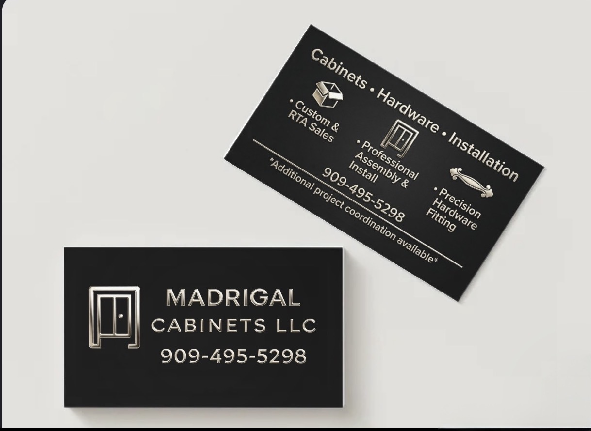
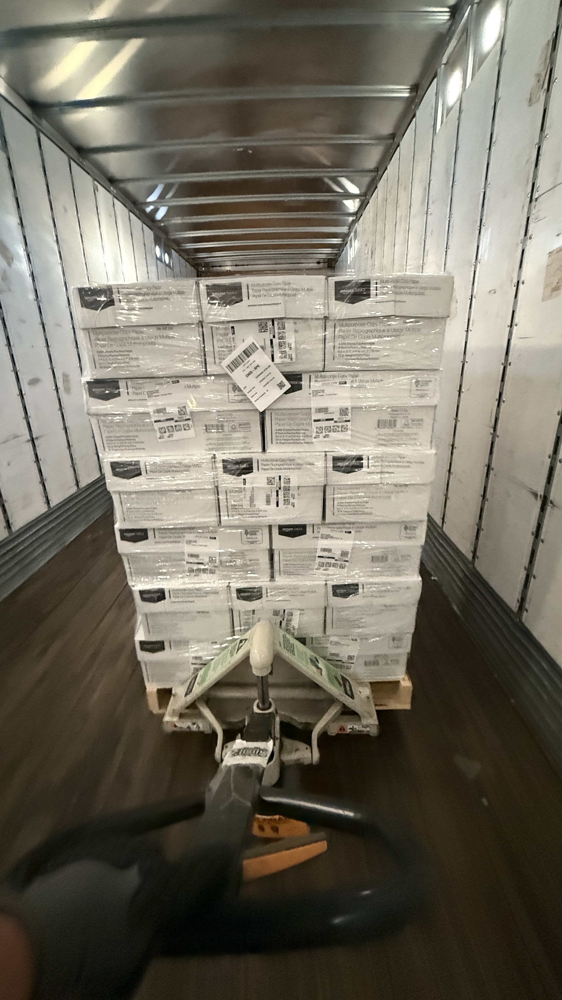
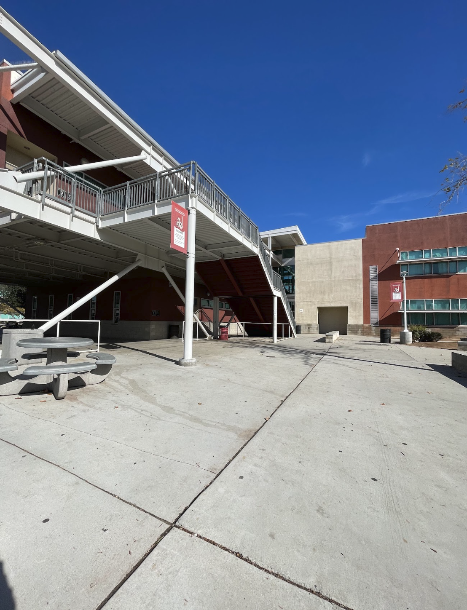

Angeldemian Madrigal
My professional path started with eight months at Amazon, a role that taught me how to stay productive in a high pressure environment where efficiency is everything. That experience was a massive wake-up call regarding how much organization it takes to keep a large-scale operation moving, and I realized I wanted to apply those same lessons to something we could build from the ground up as a family. Transitioning into my current role as a one-third owner of our cabinetry business alongside my father and brother has allowed me to take that corporate work ethic and pour it into our own legacy. It’s a different kind of pressure when your name is on the line.
When we officially started the company six months ago, I took the lead on the administrative side to make sure we were set up for long-term success. I handled the LLC creation and all the necessary legal filings because I wanted to ensure we were operating the right way and protecting our future. On a daily basis, however, my work is much more hands-on. I’m usually on-site managing the assembly of our RTA cabinets. I take full responsibility for making sure every box is square and every joint is solid before my dad starts the actual installation process. Once the units are on the walls, I step back in to handle the critical finishing work. I spend a lot of time adjusting hinges, doing fine touch-ups, and installing the handles. I’ve realized that for a homeowner, the small details like making sure every drawer is perfectly level and every door sits flush are what actually make a project feel high-end, so I make sure that part of the job is never rushed.
To support the physical work I’m doing in the field, I am also currently a freshman at UCR studying Business Accounting. I chose this specific major with a very clear goal in mind: I want to be able to manage our company’s finances, track our growth, and ensure we are staying profitable as we scale. It is important to me that I don’t just understand how to build and finish the product, but also how to run a healthy, sustainable business that can support my family for years to come. Working with my dad and brother is a massive motivator for me, and it pushes me to balance my time between the classroom and the job site. My role is ultimately a blend of keeping the business side organized while ensuring the physical craftsmanship we produce is something we can all be proud to stand behind.
Experience
Co-Owner & Operations
• Handled the formation of the company.
• Oversee customer payments and business transactions.
• Manage the assembly of RTA cabinets and finishing work.
Warehouse Associate
• Sorted Packages and carts to meet daily warehouse goals.
• Kept my area clean and always maintained safe pratices.
LinkCrew Leader
• Helped incoming freshman transition into highschool.
• Led discussions and activities for freshman during advisory.
• TA'd for a lower level math class.
Education
UC Riverside
Portfolio






